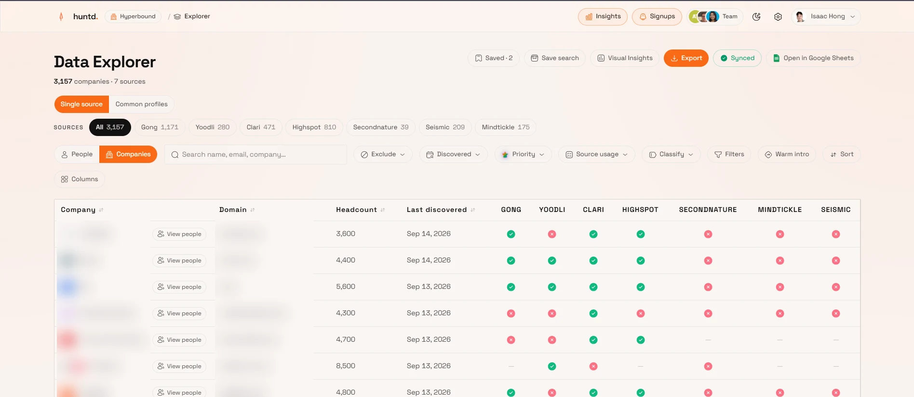

Customer dashboard
The product customers log into every day. I owned it end to end — interface, API and schema.
Outcome One dashboard every customer works in daily, with search and filters over millions of leads that stay fast
Lead data used to arrive as CSV attachments, with no filtering and no sense of where a record came from. Now customers search their own verified users across millions of rows, break them down by source, save searches and export in a click. It's in daily use at Deepgram, Blitzy, HyperBound and Peec AI.
Around it, everything daily users asked for next:
- Google Sheets live sync One workbook per org, updated on change instead of a 20-hour full rewrite.
- Insights & tiering Learns each org's ideal customer and ranks every watched company A to D.
- Visual Insights Maps, company size, industry, seniority and top accounts at a glance.
- Personas Job titles sorted into levels, departments and functions, saved as one-click presets.
- Public API & webhooks Keyed, rate-limited endpoints and signed signup events.
- Team invites Reusable org links and single-use email invites.
- Infisical One source of truth for config across five services; only what changed redeploys.
- Admin CLI 104 commands, dry-run by default, plus Claude Code skills to run production safely.
- React
- TypeScript
- Node
- Express
- PostgreSQL
- Supabase
- Recharts
- Leaflet
- Infisical
